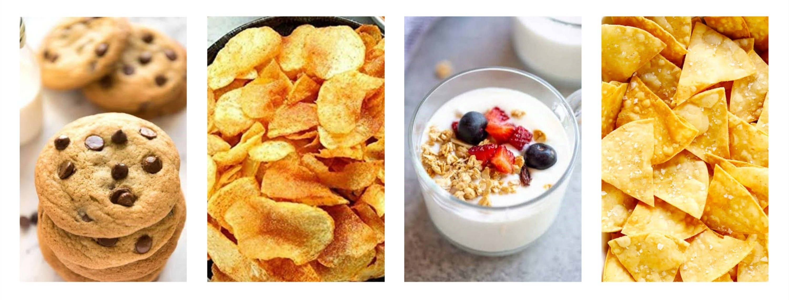
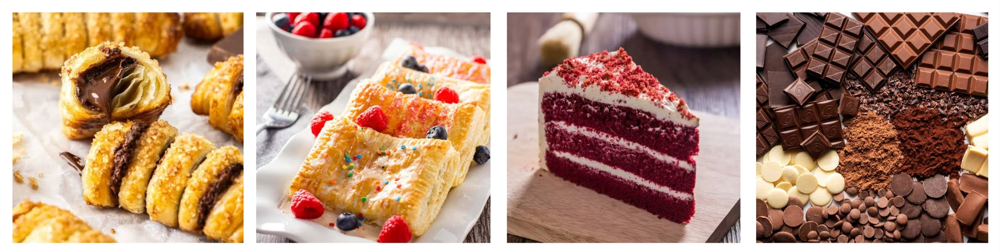
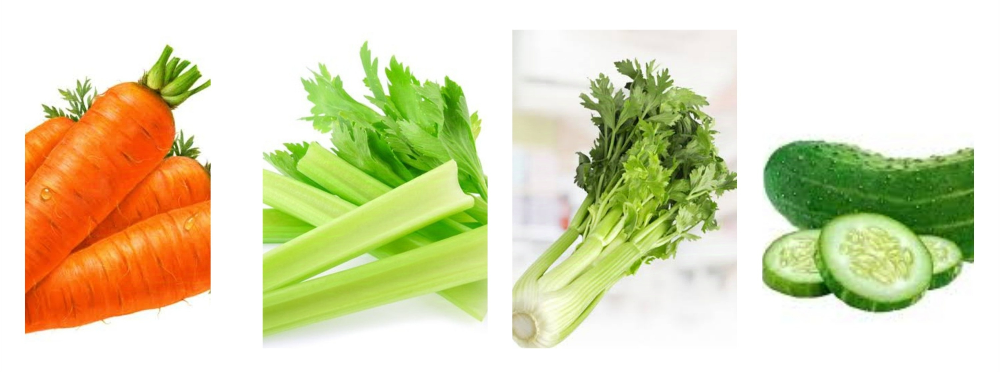
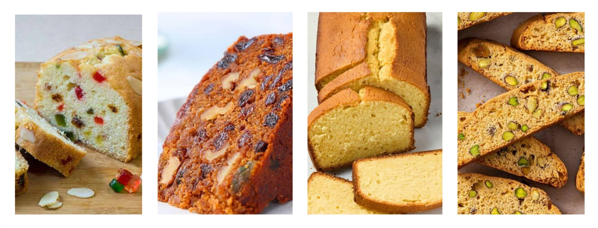
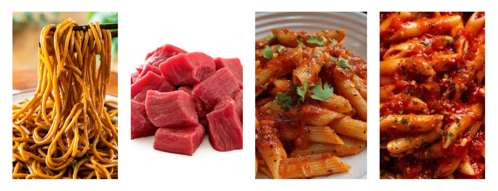

Snacks are small portions of food typically consumed between meals. They can be sweet or savory and are often
designed to provide quick energy, satisfy cravings, or curb hunger. Snacks can include a wide variety of items, such as
fruits, nuts, chips, cookies, and yogurt, and they can be enjoyed on the go or at home.
Savory snacks are foods that have a salty, spicy, or umami flavor, and they typically include items like chips, pretzels,
popcorn, nuts, and cheese. These snacks can be satisfying and flavorful, making them popular choices for munching
between meals or during gatherings.
Savory snacks can be enjoyed at various times, such as during movie nights, parties, or as a quick energy boost in
the afternoon. However, it’s important to be mindful of portion sizes and choose options that are lower in
unhealthy fats and sodium. Many savory snacks can be calorie-dense, so moderation is key to avoiding excessive calorie intake.
To make savory snacks healthier, consider options like baked chips, air-popped popcorn, or mixed nuts. Pairing
them with fresh vegetables or dips like hummus can also enhance their nutritional value. When chosen wisely and
consumed in moderation, savory snacks can be a tasty and satisfying part of your diet.

Sweet snacks
Sweet snacks are foods that have a sugary or dessert-like flavor and typically include items like cookies, candies,
cakes, and pastries. While they can be enjoyable treats, it's important to choose options that provide some
nutritional value, such as those made with whole grains, nuts, or fruits. These snacks can satisfy sweet cravings and
add a bit of joy to your day.
Sweet snacks can be enjoyed at various times, such as as an occasional treat after meals, during celebrations, or
when you want a little pick-me-up in the afternoon. However, it's essential to practice moderation, as many
sweet snacks can be high in added sugars and calories, which may contribute to weight gain and other health
issues if consumed excessively. Aim for small portions, and try to pair sweet snacks with healthier options, like
yogurt or fruit, to create a more balanced choice. When enjoyed mindfully, sweet snacks can be a delightful part of your diet.

Healthy snacks
Healthy snacks are foods that provide nutritional benefits and are generally low in added sugars, unhealthy fats, and
calories. They often include items like fresh fruits, vegetables, nuts, yogurt, and whole-grain options. These
snacks offer essential vitamins, minerals, and fiber, helping to keep energy levels stable and support overall health.
They are great choices for satisfying hunger while promoting better eating habits.
Healthy snacks can be enjoyed throughout the day, especially between meals or around workouts. Ideal times
include mid-morning and mid-afternoon, helping to maintain energy and prevent overeating. However, it’s
important to keep portion sizes in check, typically around 100-200 calories per snack, and to be mindful of added
sugars in some options. When chosen wisely and consumed in moderation, healthy snacks can support
energy and overall well-being.

Baked goods
Baked goods are a variety of foods that are typically made from flour and cooked in an oven. Common examples
include bread, muffins, cookies, pastries, and cakes. While they can be delicious and comforting, it’s important to
choose options that provide some nutritional benefits, such as those made with whole grains, fruits, or nuts.
Baked goods can be enjoyed at different times, such as for breakfast, as a snack, or as dessert after meals.
However, many baked goods can be high in added sugars and unhealthy fats, so moderation is essential to prevent
excessive calorie intake and maintain a balanced diet.
To make baked goods healthier, look for recipes that incorporate whole-grain flours, reduce added sugars, or
add nutritious ingredients like fruits and seeds. When enjoyed in moderation and chosen wisely, baked goods
can be a delightful addition to your diet, offering comfort and satisfaction while still being mindful of health.

Convenience snacks
Convenience snacks are ready-to-eat foods that are easy to grab and consume, making them popular for busy
lifestyles. Common examples include protein bars, granola bars, jerky, and pre-packaged fruit cups. While they offer
convenience and portability, it's important to select options that provide nutritional benefits and are lower in
added sugars, unhealthy fats, and preservatives.
Convenience snacks can be enjoyed at various times, such as on-the-go during busy days, before or after workouts,
or as quick meals when time is limited. However, many convenience snacks can be calorie-dense and may lack
essential nutrients, so moderation is key.
To make healthier choices, look for snacks that include whole grains, protein, and natural ingredients. Checking
the ingredient list and nutrition label can help you avoid options high in sugars and additives. When chosen wisely,
convenience snacks can fit into a balanced diet, providing quick energy and satisfying hunger while supporting your overall health.
